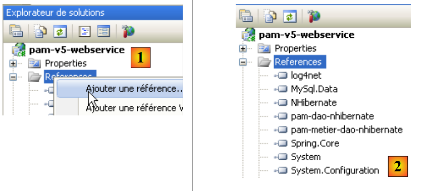
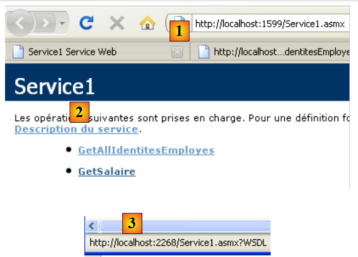
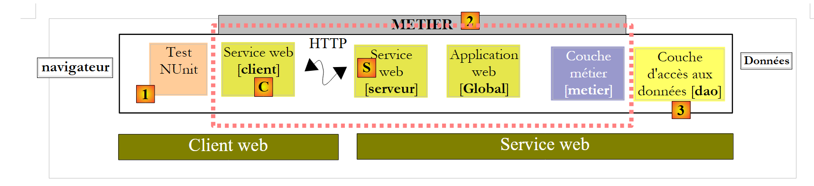

9. Die Anwendung [SimuPaie] – Version 5 – ASP.NET / Webdienst
Empfohlene Literatur: Referenz [2], Einführung in C# 2008, Kapitel 10 „Webdienste“
9.1. Die neue Architektur der Anwendung
Die Schichtenarchitektur der Anwendung Pam sieht derzeit wie folgt aus:
 |
Wir werden sie wie folgt weiterentwickeln:
 |
Während in der bisherigen Architektur die Schichten [web], [metier] und [dao] in derselben virtuellen Maschine ausgeführt wurden,NET, wird in der neuen Architektur die Schicht [web] in einer anderen virtuellen Maschine ausgeführt als die Schichten [metier] und [dao]. Dies ist insbesondere dann der Fall, wenn sich die Schicht [web] auf einer Maschine M1 befindet und die Schichten [metier] und [dao] auf einer Maschine M2. Hier handelt es sich um eine Client-Server-Architektur:
- Der Server besteht aus den Schichten [metier] und [dao]. Da es sich um einen Webdienst handelt, benötigt er den Webserver Nr. 2, um ausgeführt zu werden.
- Der Client besteht aus der Schicht [web]. Um ausgeführt zu werden, benötigt er den Webserver Nr. 1.
- Client und Server kommunizieren über das TCP/IP-Netzwerk mit dem Protokoll HTTP / SOAP. Dazu müssen der Architektur zwei neue Schichten hinzugefügt werden:
- die Schicht [S], bei der es sich um einen Webdienst handelt. Der Webdienst empfängt die Anfragen von Remote-Clients und nutzt die Schichten [metier] und [dao], um diese zu bearbeiten. Es gibt zahlreiche Möglichkeiten, einen TCP/IP-Dienst aufzubauen. Der Webdienst bietet einen doppelten Vorteil:
- Er nutzt das Protokoll HTTP, das von den Firewalls von Unternehmen und Behörden durchgelassen wird.
- er nutzt ein standardisiertes HTTP-/SOAP-Subprotokoll, das von zahlreichen Entwicklungsplattformen implementiert wird: .NET, Java, PHP, Flex, … So kann ein Webdienst von .Net-, Java-, PHP- und Flex-Clients „genutzt“ werden (dies ist der übliche Begriff)
- Die [C]-Schicht fungiert als Client des entfernten Webdienstes. Ihre Aufgabe ist es, mit dem Webdienst [S] zu kommunizieren.
- die Schicht [S], bei der es sich um einen Webdienst handelt. Der Webdienst empfängt die Anfragen von Remote-Clients und nutzt die Schichten [metier] und [dao], um diese zu bearbeiten. Es gibt zahlreiche Möglichkeiten, einen TCP/IP-Dienst aufzubauen. Der Webdienst bietet einen doppelten Vorteil:
Diese neue Architektur lässt sich ohne großen Aufwand aus den bisherigen ableiten:
- Die Schichten [metier] und [dao] bleiben unverändert
- die Schicht [web] wird leicht angepasst, im Wesentlichen, um auf Entitäten wie Employe und FeuilleSalaire zu verweisen, die nun zu Entitäten der Client-Schicht [C] geworden sind. Diese Entitäten entsprechen denen der Schichten [metier] oder [dao], gehören jedoch zu unterschiedlichen Namensräumen.
- Die Serverschicht [S] ist eine Klasse, die die Schnittstelle IPamMetier der Schicht [metier] implementiert. Diese Implementierung beschränkt sich darauf, die entsprechenden Methoden der Schicht [metier] aufzurufen. Die von der Server-Schicht [S] implementierten Methoden werden den Remote-Clients „zur Verfügung gestellt“, die sie aufrufen können.
- Die Client-Schicht [C] wird von Visual Studio generiert.
Die Prinzipien der neuen Architektur lauten wie folgt:
- Die Schicht [web] kommuniziert weiterhin mit der Schicht [metier], als wäre diese lokal. Zu diesem Zweck implementiert die Client-Schicht [C] dieSchnittstelle IPamMetier der eigentlichen Schicht [metier] und präsentiert sich der Schicht [web] als lokale Schicht [metier]. Abgesehen von dem zuvor erwähnten Problem mit den Namensräumen bleibt die Schicht [web] unverändert. Das ist der Vorteil der schichtweisen Arbeitsweise. Hätte man eine einschichtige Anwendung entwickelt, müsste man diese sehr grundlegend überarbeiten.
- Die Client-Schicht [C] leitet die Anfragen der Schicht [web] für diese transparent an den entfernten Webdienst [S] weiter. Sie übernimmt den gesamten Aspekt der „Netzwerkkommunikation“. Sie empfängt eine Antwort vom entfernten Webdienst, die sie so aufbereitet, dass sie an die Schicht [web] in der von dieser erwarteten Form zurückgegeben wird.
- Auf der Serverseite empfängt der Webdienst [S] Befehle von seinen Remote-Clients. Er bereitet diese so auf, dass die Methoden der Schnittstelle IPamMetier der Schicht [metier] aufgerufen werden. Sobald er die Antwort von der Schicht [metier] erhalten hat, bereitet er diese auf, um sie über das Netzwerk an den Client [C] weiterzuleiten. Die Schichten [metier] und [dao] müssen nicht geändert werden.
9.2. Das Visual Web Developer-Projekt des Webdienstes
Wir erstellen ein neues Projekt mit Visual Web Developer:
 |
- In [1] wählen wir ein Webprojekt in C#
- in [2] wählen wir „Webdienstanwendung ASP.NET“
- in [3] geben wir dem Webprojekt einen Namen
- in [4] geben wir einen Speicherort für dieses Projekt an
 |
- In [1] das generierte Projekt. Es handelt sich um ein klassisches Webprojekt mit folgenden Besonderheiten:
- Es wurde angegeben, dass es sich um ein „Webdienst“-Projekt handelt. Ein Webdienst sendet keine Webseiten HTML an seine Kunden, sondern Daten im Format XML. Daher wurde die üblicherweise generierte Seite [Default.aspx] nicht erstellt.
- In [2] wurde eine Datei [Service1.asmx] mit folgendem Inhalt generiert:
<%@ WebService Language="C#" CodeBehind="Service1.asmx.cs" Class="pam_v5_webservice.Service1" %>
- (Fortsetzung)
- - Das Tag WebService gibt an, dass [Service.asmx] ein Webdienst ist
- - Das Attribut CodeBehind gibt den Speicherort des Quellcodes dieses Webdienstes an
- - Das Attribut Class gibt den Namen der Klasse an, die den Webdienst im Quellcode implementiert
Der Quellcode [Service.asmx.cs] des standardmäßig generierten Webdienstes lautet wie folgt:
using System.Web.Services;
namespace pam_v5_webservice
{
/// <summary>
/// Kurzbeschreibung von Service1
/// </summary>
[WebService(Namespace = "http://tempuri.org/")]
[WebServiceBinding(ConformsTo = WsiProfiles.BasicProfile1_1)]
[System.ComponentModel.ToolboxItem(false)]
// Um den Aufruf dieses Webdienstes aus einem Skript mithilfe von ASP.NET AJAX zu ermöglichen, entfernen Sie die Kommentarzeichen aus der folgenden Zeile.
// [System.Web.Script.Services.ScriptService]
public class Service1 : System.Web.Services.WebService
{
[WebMethod]
public string HelloWorld()
{
return "Hello World";
}
}
}
- Zeile 8: Die Anmerkung „WebService“, die bewirkt, dass die Klasse „Service1“ aus Zeile 13 als Webdienst bereitgestellt wird. Ein Webdienst gehört zu einem Namensraum, um zu verhindern, dass zwei Webdienste weltweit denselben Namen tragen. Wir werden diesen Namensraum zu einem späteren Zeitpunkt ändern müssen.
- Zeile 13: Die Klasse Service1 leitet sich von der Klasse WebService des Frameworks .NET ab.
- Zeile 16: Die Annotation WebMethod bewirkt, dass die damit annotierte Methode für Remote-Clients verfügbar gemacht wird, die sie somit aufrufen können.
- Zeilen 17–20: Die Methode HelloWorld ist eine Beispielmethode. Wir werden sie später entfernen. Sie ermöglicht es uns, erste Tests durchzuführen und die Tools von Visual Studio sowie einige wichtige Aspekte von Webdiensten kennenzulernen.
 |
- In [1] führen wir den Webdienst [Service.asmx] aus
 |
- VS Web Developer hat seinen integrierten Webserver gestartet und lässt ihn auf einem zufälligen Port lauschen, hier 1599. Die URL [2] wurde anschließend an den Webserver angefordert. Dabei handelt es sich um die URL einer Testseite des Webdienstes.
- in [3], ein Link, über den die Beschreibungsdatei des Webdienstes angezeigt werden kann. Diese Datei, die aufgrund ihrer Endung (.wsdl) als WSDL (WebService Description Language) bezeichnet wird, ist eine XML-Datei, die die vom Webdienst bereitgestellten Methoden beschreibt. Anhand dieser Datei „WSDL“ können Clients folgende Informationen abrufen:
- den Namensraum des Webdienstes
- die Liste der vom Webdienst bereitgestellten Methoden
- die von jeder Methode erwarteten Parameter
- die von jeder Methode zurückgegebene Antwort
- in [4] die einzige Methode, die vom Web -Dienst bereitgestellt wird.
 |
- in [5]: der Inhalt der Datei WSDL, die über den Link [3] abgerufen wurde. Zu beachten ist die Datei URL [6]. Die Kenntnis dieser Datei ist für die Kunden des Webdienstes erforderlich.
 |
- in [7]: Die Seite, die über den Link [4] aufgerufen wird, ermöglicht den Aufruf der Methode [HelloWorld] des Webdienstes
- in [8], das erhaltene Ergebnis: eine Antwort XML. Zu beachten ist die URL [9] der Methode.
Die Betrachtung der vorangegangenen Seiten vermittelt ein Verständnis dafür, wie eine Methode eines Webdienstes aufgerufen wird und welche Art von Antwort sie zurückgibt. Dies ermöglicht es, Clients zu schreiben, die mit dem Webdienst kommunizieren können. Die meisten aktuellen IDE ermöglichen die automatische Generierung dieses HTTP-Clients, sodass der Entwickler ihn nicht selbst schreiben muss. Dies gilt insbesondere für Visual Studio Express.
Bevor wir mit diesem Projekt fortfahren, werden wir den Namespace ändern, der standardmäßig bei der Generierung der Klassen verwendet wird:
 |
Wenn wir die Projekteigenschaften auswählen (Rechtsklick auf das Projekt / Eigenschaften), sehen wir unter „[1]“ den Namen des Projekts „l'assembly“ und unter „[2]“ dessen Standard-Namespace.
Anschließend
- ändern wir in [Service1.asmx.cs] den Namensraum der Klasse:
using System.Web.Services;
namespace pam_v5
{
...
public class Service1 : System.Web.Services.WebService
{
...
}
}
- In [Service.asmx] ändern wir ebenfalls den für die Klasse [Service1] verwendeten Namensraum (Rechtsklick / Markup anzeigen):
<%@ WebService Language="C#" CodeBehind="Service1.asmx.cs" Class="pam_v5.Service1" %>
Kehren wir zur Architektur unserer Anwendung zurück:
 |
- Die Schicht [S] ist der Webdienst. Sie stellt lediglich die Methoden der Schicht [metier] für Remote-Clients bereit. Diese Schicht bauen wir gerade auf.
- Die Schicht [C] ist der Client HTTP des Webdienstes. Diese Schicht können die IDE automatisch generieren.
- Die Schicht [web] betrachtet die Schicht [C] als lokale Schicht [metier], wenn man dafür sorgt, dass die Schicht [C] dieSchnittstelle der entfernten Schicht [metier] implementiert.
Im Folgenden sehen wir, dass unser Webdienst:
- die Methoden der Schicht [metier] bereitstellt
- mit dieser kommunizieren, die wiederum mit der Schicht [dao] kommunizieren wird.
Das Projekt muss daher die DLL der Schichten [metier] und [dao] verwenden. Es entwickelt sich wie folgt:
 |
- zu [1], man fügt Verweise auf das Projekt hinzu
- in [2] werden die üblichen DLL aus dem Ordner [lib] ausgewählt. Dabei ist darauf zu achten, dass bei allen die Eigenschaft „Lokale Kopie“ auf True gesetzt ist. Die ausgewählten DLL sind diejenigen, die die Schichten [metier] und [dao] mit einer Unterstützung durch NHibernate implementieren.
Eine Webanwendung vom Typ „Webdienst ASP.NET“ kann wie eine klassische „Website ASP.NET“-Anwendung über eine globale Anwendungsklasse „Global.asax“ verfügen. Wir haben den Nutzen einer solchen Klasse bereits gesehen:
- Sie wird beim Start der Anwendung instanziiert und verbleibt im Speicher
- sie kann somit Daten speichern, die von allen Clients gemeinsam genutzt werden und schreibgeschützt sind. In unserer Anwendung wird sie, wie in den vorherigen, die vereinfachte Liste der Mitarbeiter speichern. Dadurch wird vermieden, dass diese Liste bei einer Anfrage eines Clients aus der Datenbank abgerufen werden muss.
 |
- In [1] mit der rechten Maustaste auf das Projekt klicken
- in [2], wählen Sie die Option [Ajouter un nouvel élément]
- in [3], wählen Sie [Classe d'application globale]
- in [4] wurde die Datei [Global.asax] zum Projekt hinzugefügt
Der Inhalt der Datei [Global.asax] lautet wie folgt:
<%@ Application Codebehind="Global.asax.cs" Inherits="pam_v5.Global" Language="C#" %>
Der Inhalt der Datei „[Global.asax.cs]“ lautet wie folgt:
using System;
namespace pam_v5
{
public class Global : System.Web.HttpApplication
{
protected void Application_Start(object sender, EventArgs e)
{
}
...
}
}
Was müssen wir in der Methode Application_Start tun? Genau dasselbe wie in den vorherigen Webanwendungen. Kehren wir zur Architektur der Anwendung zurück und fügen wir dort die Klasse [Global] ein:
 |
In der obigen Abbildung
- wird die Klasse [Global] beim Start des Webdienstes instanziiert. Sie verbleibt im Speicher, solange der Webdienst aktiv ist.
- Die Klasse [Global] instanziiert die Schichten [metier] und [dao] in ihrer Methode [Application_Start]
- Um die Leistung zu verbessern, speichert die Klasse [Global] die vereinfachte Mitarbeiterliste in einem internen Feld. Sie liefert die Mitarbeiterliste aus diesem Feld aus.
- Der Webdienst wird bei jeder Anfrage eines Clients instanziiert. Er wird nach der Bearbeitung dieser Anfrage wieder beendet. Er wird nicht direkt die Schicht [metier] ansprechen, sondern die Klasse [Global]. Diese wird die Schnittstelle der Schicht [metier] implementieren.
Die Klasse [Global] entspricht derjenigen, die bereits für die vorherigen Anwendungen erstellt wurde:
using System;
using Pam.Dao.Entites;
using Pam.Metier.Entites;
using Pam.Metier.Service;
using Spring.Context.Support;
namespace pam_v5
{
public class Global : System.Web.HttpApplication
{
// --- statische Anwendungsdaten ---
public static Employe[] Employes;
public static IPamMetier PamMetier = null;
protected void Application_Start(object sender, EventArgs e)
{
// Instanziierung der Schicht [metier]
PamMetier = ContextRegistry.GetContext().GetObject("pammetier") as IPamMetier;
// Das vereinfachte Mitarbeiterverzeichnis wird abgerufen
Employes = PamMetier.GetAllIdentitesEmployes();
}
// vereinfachte Liste der Mitarbeiter
static public Employe[] GetAllIdentitesEmployes()
{
return Employes;
}
// Gehalt eines Mitarbeiters
static public FeuilleSalaire GetSalaire(string SS, double heuresTravaillées, int joursTravailles)
{
return PamMetier.GetSalaire(SS, heuresTravaillées, joursTravailles);
}
}
}
Die Klasse [Global] implementiert die Schnittstelle [IPamMetier], was jedoch in der Deklaration nicht ausdrücklich angegeben ist:
public class Global : System.Web.HttpApplication, IPamMetier
Tatsächlich sind die Methoden GetAllIdentitesEmployes (Zeile 24) und GetSalaire (Zeile 30) statisch, während die Methoden der Schnittstelle IPamMetier dies nicht sind. Daher kann die Klasse Global die Schnittstelle IPamMetier nicht implementieren. Außerdem ist es nicht möglich, die Methoden GetAllIdentitesEmployes und GetSalaire als nicht statisch zu deklarieren. Der Zugriff auf sie erfolgt nämlich über den Klassennamen und nicht über eine Instanz der Klasse.
- Zeile 15: Die Methode Application_Start entspricht derjenigen der Klassen [Global], die in den vorherigen Versionen behandelt wurden. Sie instanziiert die Schicht [metier] (Zeile 18) und initialisiert anschließend (Zeile 20) das Mitarbeiterarray aus Zeile 12.
- Zeile 24: Die Methode GetAllIdentitesEmployes gibt lediglich das Mitarbeiterarray aus Zeile 12 zurück. Darin liegt der Vorteil, es bereits beim Start der Anwendung gespeichert zu haben.
- Zeile 30: Die Methode GetSalaire ruft die gleichnamige Methode der Schicht [metier] auf.
Um die Schicht [metier] (Zeile 18) zu instanziieren, nutzt die Klasse [Global] das Spring-Framework. Dieses wird durch die Datei [Web.config] konfiguriert, die mit der des vorherigen Projekts identisch ist: Sie konfiguriert Spring und NHibernate, um die Schichten [metier] und [dao] des Webdienstes zu instanziieren.
Kommen wir nun zurück zur Architektur unserer Client-Server-Anwendung:
 |
Auf der Serverseite muss nun nur noch der Webdienst [S] selbst geschrieben werden. Kehren wir zur Architektur der Anwendung zurück:
 |
sehen wir, dass serverseitig alle Schichten, die der Schicht [metier] vorgelagert sind, deren Schnittstelle IPamMetier implementieren. Das ist zwar nicht zwingend erforderlich, erscheint aber als logischer Ansatz. Diese Argumentation lässt sich auch auf der Client-Seite auf den Client [C] des Webdienstes [S] anwenden. Somit implementieren alle Schichten, die die Schicht [web] von der Schicht [metier] trennen, die Schnittstelle IPamMetier. Man kann also sagen, dass man zu einer dreischichtigen Anwendung zurückgekehrt ist:
- die Präsentationsschicht [web] [1]
- die Schicht [metier] [2]
- die Datenzugriffsschicht [3]
Die Implementierung des Webdienstes [Service1.asmx.cs] könnte wie folgt aussehen:
using System.Web.Services;
using Pam.Dao.Entites;
using Pam.Metier.Entites;
using Pam.Metier.Service;
namespace pam_v5
{
[WebService(Namespace = "http://st.istia.univ-angers.fr/")]
[WebServiceBinding(ConformsTo = WsiProfiles.BasicProfile1_1)]
[System.ComponentModel.ToolboxItem(false)]
public class Service1 : System.Web.Services.WebService, IPamMetier
{
// Liste aller Mitarbeiter-IDs
[WebMethod]
public Employe[] GetAllIdentitesEmployes()
{
return Global.GetAllIdentitesEmployes();
}
// ------- Gehaltsberechnung
[WebMethod]
public FeuilleSalaire GetSalaire(string ss, double heuresTravaillees, int joursTravailles)
{
return Global.GetSalaire(ss, heuresTravaillees, joursTravailles);
}
}
}
- Zeile 8: Die Klasse wird mit dem Attribut [WebService] annotiert, und wir vergeben einen Namen für den Namensraum des Webdienstes
- Zeile 11: Die Klasse [Service1] erbt von der Klasse [WebService] und implementiert die Schnittstelle [IPamMetier]
- Zeilen 15 und 22: Jede Methode der Klasse wird mit dem Attribut [WebMethod] versehen, um sie für Remote-Clients verfügbar zu machen. Standardmäßig sind alle öffentlichen Methoden eines Webdienstes verfügbar. Die Attribute in den Zeilen 15 und 22 sind hier also optional. Um die Schnittstelle [IPamMetier] zu implementieren, ruft jede Methode lediglich die gleichnamige Methode der Klasse [Global] auf.
Wir sind bereit für die Ausführung des Webdienstes:
 |
- in [1] wird das Projekt neu generiert
- In [2] wählen wir den Webdienst [Service1.asmx] aus und zeigen ihn im Browser [3] an
- in [4], die angezeigte Webseite. Sie zeigt die Methoden des Webdienstes an.
 |
- In [4] folgen wir dem Link [GetAllIdentitesEmployes] und gelangen in [5] zur Testseite dieser Methode.
- In [6], dem URL der Methode
- Unter [7] befindet sich die Schaltfläche [Appeler] zum Testen der Methode. Diese erfordert keine Parameter.
- in [8], dem vom Webdienst zurückgegebenen XML-Ergebnis. Darin sind nur die Eigenschaften SS, Nom, Prenom der Objekte Employe von Bedeutung, da die Methode [GetAllIdentitesEmployes] nur diese Eigenschaften abfragt. Diese Methode gibt jedoch ein Array von Objekten Employe zurück. In [8] ist zu sehen, dass die numerischen Eigenschaften Id und Version im zurückgegebenen XML-Stream enthalten sind, nicht jedoch die Eigenschaften mit dem Wert null: Adresse, Ville, CodePostal, Indemnites.
Wir haben einen aktiven Webdienst. Wir werden nun einen C#-Client dafür schreiben. Dazu benötigen wir den Wert URI aus der Datei WSDL des Webdienstes. Diesen erhalten wir auf der Seite, die beim Ausführen von [Service.asmx] zunächst angezeigt wird:
 |
- in [1], die URI des Webdienstes
- in [2], der Link, der zu seiner Datei WSDL führt
- in [3], der Wert dieses Links
9.3. Das C#-Projekt eines Webdienst-Clients NUnit
Wir erstellen ein C#-Projekt (mit Visual C# und nicht mit Visual Web Developer) für den Webdienst-Client. Es handelt sich um einen Test-Client NUnit. Das Projekt wird daher vom Typ „Klassenbibliothek“ sein.
 |
- In [1] erstellen wir ein C#-Projekt vom Typ „Klassenbibliothek“
- In [2] benennen wir das Projekt
- in [3]: das Projekt. Wir löschen [Class1.cs].
- in [4], das neue Projekt.
 |
- In den Projekteigenschaften, auf der Registerkarte [Application] [5], legen wir den Namensraum des Projekts fest. Jede von IDE generierte Klasse wird in diesem Namensraum erstellt.
Wir speichern unser neues Projekt an einem Ort unserer Wahl:
Anschließend generieren wir den Client für den Remote-Webdienst. Um zu verstehen, was wir tun werden, müssen wir noch einmal auf die Client-Server-Architektur zurückkommen, die wir gerade aufbauen:
 |
IDE generiert die Client-Schicht [C] aus der Datei URI des Webdienstes [S]. Zur Erinnerung: Die Datei „URI“ wurde bereits zuvor vermerkt. Wir gehen bei der „ “ wie folgt vor:
 |
- in [1], klicken Sie mit der rechten Maustaste auf den Zweig References und fügen Sie einen Dienstverweis
- in [2], geben Sie die URL der zuvor notierten Webdienst-Datei WSDL an. Dieser muss zuvor gestartet werden, falls er noch nicht läuft.
- in [3] die Erkennung des Webdienstes über dessen Datei WSDL
- in [4] den erkannten Webdienst
- in [5] die vom Webdienst bereitgestellten Methoden.
- in [6]: den Namensraum, in dem die Klassen und Schnittstellen des zu generierenden Clients platziert werden sollen.
- Man bestätigt den Assistenten
 |
- in [1], die generierte Client- . Durch Doppelklick darauf erhält man Zugriff auf deren Inhalt.
- In [2] werden im Objekt-Explorer die Klassen und Schnittstellen des Namensraums Client.WsPam angezeigt. Dies ist der Namensraum des generierten Clients.
- In [3] befindet sich die Klasse, die den Webservice-Client implementiert.
- In [4] sind die vom Client [Service1SoapClient] implementierten Methoden aufgeführt. Dort finden sich die beiden Methoden des Remote-Webdienstes [5] und [6].
- In [2] finden sich die Darstellungen der Entitäten der Ebenen:
- [metier]: FeuilleSalaire, ElementsSalaire
- [dao]: Employe, Cotisations, Indemnites
Im weiteren Verlauf ist zu beachten, dass sich diese Abbildungen der entfernten Entitäten auf der Client-Seite und im Namensraum PamV5Client.WsPam befinden.
Betrachten wir die von einem dieser Objekte bereitgestellten Methoden und Eigenschaften:
 |
- In [1] wird die lokale Klasse [Employe] ausgewählt
- in [2] finden wir die Eigenschaften der entfernten Entität [Employe] sowie private Felder, die für die eigenen Zwecke der lokalen Entität verwendet werden.
Kehren wir zu unserer C#-Anwendung zurück. Wir fügen ihr eine Testklasse NUnit hinzu:
 |
- In [1] wurde die Klasse [NUnit] hinzugefügt. Die Klasse [NUnit] benötigt das Framework NUnit und somit eine Referenz auf dessen DLL. Wir gehen hier davon aus, dass das Framework NUnit auf dem Rechner installiert wurde (http://nunit.org/).
- In [2] fügen wir einen Verweis auf das Projekt
- auf der Registerkarte „[3]“. In der Liste „NET“, die die auf dem Rechner gespeicherten DLL-Dateien enthält, wählen wir [4] aus, die DLL und [nunit.framework] (Mindestversion 2.4.6).
Außerdem verwenden wir Spring, um den lokalen Client [C] des Webdienstes [S] zu instanziieren:
 |
Die Referenz auf DLL von Spring kann wie beim Framework NUnit hinzugefügt werden, sofern die DLL zuvor auf dem Rechner registriert wurden (http://www.springframework.net/download.html).
Wir gehen anders vor. Wir verwenden den Ordner „[lib]“ aus den vorherigen Projekten, der die für Spring erforderlichen DLL enthielt, und fügen den Spring-Verweis zum Projekt hinzu:
 |
Kommen wir noch einmal auf die Architektur des derzeit im Aufbau befindlichen Clients zurück:
 |
Oben sehen wir, dass der Test-Client [1] mit einer erweiterten Schicht [metier] [2] verbunden ist. Diese verfügt über dieselben Methoden wie die entfernte Schicht [metier]. Wir können daher die Testklasse verwenden, die wir bereits beim Testen der Schicht [metier] im C#-Projekt [pam-metier-dao-nhibernate] kennengelernt haben:
using NUnit.Framework;
using Pam.Dao.Entites;
using Pam.Metier.Entites;
using Pam.Metier.Service;
using Spring.Context.Support;
namespace Pam.Metier.Tests {
[TestFixture()]
public class NunitTestPamMetier : AssertionHelper {
// die zu testende Schicht [metier]
private IPamMetier pamMetier;
// Konstruktor
public NunitTestPamMetier() {
// Instanziierung der Schicht [dao]
pamMetier = ContextRegistry.GetContext().GetObject("pammetier") as IPamMetier;
}
[Test]
public void GetAllIdentitesEmployes() {
// Überprüfung der Mitarbeiterzahl
Expect(2, EqualTo(pamMetier.GetAllIdentitesEmployes().Length));
}
[Test]
public void GetSalaire1() {
// Berechnung einer Gehaltsabrechnung
FeuilleSalaire feuilleSalaire = pamMetier.GetSalaire("254104940426058", 150, 20);
// Prüfungen
Expect(368.77, EqualTo(feuilleSalaire.ElementsSalaire.SalaireNet).Within(1E-06));
// Lohnabrechnung eines nicht existierenden Mitarbeiters
bool erreur = false;
try {
feuilleSalaire = pamMetier.GetSalaire("xx", 150, 20);
} catch (PamException) {
erreur = true;
}
Expect(erreur, True);
}
}
}
Es sind einige Änderungen vorzunehmen:
- In Zeile 18 wird die Schicht [metier] mit dem Spring-Framework instanziiert. Die Klasse ist in beiden Fällen nicht dieselbe. Hier ist die lokale Schicht [metier] eine Instanz der Klasse [PamV5Client.WsPam.Service1SoapClient], der von IDE generierten Klasse. Daher ist Spring in der Datei [app.config] des C#-Projekts wie folgt konfiguriert:
<?xml version="1.0" encoding="utf-8" ?>
<configuration>
<configSections>
<sectionGroup name="spring">
<section name="context" type="Spring.Context.Support.ContextHandler, Spring.Core" />
<section name="objects" type="Spring.Context.Support.DefaultSectionHandler, Spring.Core" />
</sectionGroup>
</configSections>
<spring>
<context>
<resource uri="config://spring/objects" />
</context>
<objects xmlns="http://www.springframework.net">
<object id="pammetier" type="PamV5Client.WsPam.Service1SoapClient, pam-v5-client-csharp-webservice"/>
</objects>
</spring>
<system.serviceModel>
...
- In Zeile 16 oben ist das Objekt [pammetier] eine Instanz der Klasse [PamV5Client.WsPam.Service1SoapClient], die sich in der Assembly [pam-v5-client-csharp-webservice] befindet. Um die erste Information zu erhalten, genügt es, im Objekt-Explorer (Abschnitt 9.3) zur Definition der Klasse [Service1SoapClient] zurückzukehren:
 |
- in [2], der Implementierungsklasse der lokalen Schicht [metier], und in [1] deren Namensraum
- in [3], in den Projekteigenschaften der Name der Assembly, die zweite Information, die für die Konfiguration des Spring-Objekts [pammetier] erforderlich ist.
Kehren wir zum Code für die Instanziierung der lokalen Schicht [metier] in [NUnit.cs] zurück:
// Die zu testende Schicht [metier]
private IPamMetier pamMetier;
// Konstruktor
public NunitTestPamMetier() {
// Instanziierung der Schicht [dao]
pamMetier = ContextRegistry.GetContext().GetObject("pammetier") as IPamMetier;
}
In Zeile 7 war die entfernte Schicht [metier] vom Typ IPamMetier. Hier ist die Schicht [metier] vom Typ [Service1SoapClient]:
public class Service1SoapClient : System.ServiceModel.ClientBase<Service1Soap>
Wir sehen, dass die Klasse Service1SoapClient die Schnittstelle IPamMetier nicht implementiert, obwohl sie gleichnamige Methoden bereitstellt. Daher müssen wir die Instanziierung der lokalen Schicht [metier] wie folgt schreiben:
// die zu testende Schicht [metier]
private Service1SoapClient pamMetier;
// Konstruktor
public NunitTestPamMetier() {
// Instanziierung der Schicht [metier]
pamMetier = ContextRegistry.GetContext().GetObject("pammetier") as Service1SoapClient;
}
Eine weitere Änderung, die vorgenommen werden muss:
[Test]
public void GetSalaire1() {
...
try {
feuilleSalaire = pamMetier.GetSalaire("xx", 150, 20);
} catch (PamException) {
erreur = true;
}
Expect(erreur, True);
}
Der obige Code verwendet in Zeile 6 den Typ PamException, der auf der Client-Seite nicht existiert. Wir ersetzen ihn durch seine übergeordnete Klasse, den Typ Exception.
[Test]
public void GetSalaire1() {
...
try {
feuilleSalaire = pamMetier.GetSalaire("xx", 150, 20);
} catch (Exception) {
erreur = true;
}
Expect(erreur, True);
}
Schließlich sind die importierten Namespaces nicht mehr identisch:
using System;
using PamV5Client.WsPam;
using NUnit.Framework;
using Spring.Context.Support;
Nachdem dies erledigt ist, kann das Projekt vom Typ „Klassenbibliothek“ generiert werden. Dabei wird die folgende Datei „DLL“ erstellt:
 |
- in [1], der Ordner [bin/Release] des C#-Projekts
- in [2], die DLL des Projekts.
Der Test NUnit wird anschließend vom Framework NUnit ausgeführt (die Basis MySQL dbpam_nhibernate muss für den Test aktiv sein):
- In [3] und [4] wird die DLL [2] in die Testanwendung NUnit geladen
 |
- in [5] wird die Testklasse ausgewählt und ausgeführt [6]
- in [7], die Ergebnisse eines erfolgreichen Tests
Wir verfügen nun über einen betriebsbereiten Webservice.